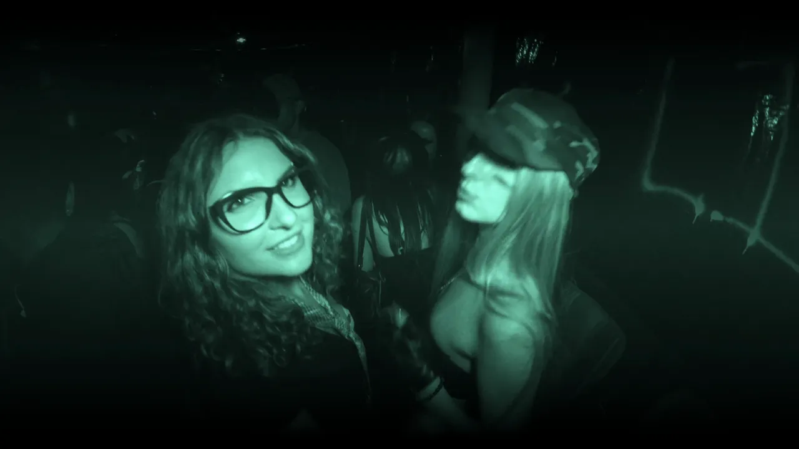

ALL FILMS
ABOUT ME
Jag 'Arthouse' Manalang is a cinematographer who moved from the Bay Area to LA.
He visualizes untold personal stories based on his memories into atmospheric experiences, emphasizing a humanistic sonder as he pushes camerawork to new heights.
Jag brings technical command across camera and lighting, working fluidly as a 1st AC, camera operator, or drone pilot. His range adds value from prep through execution in narrative, commercial, and documentary work.
With 50+ releases across Instagram, YouTube, and Vimeo, Jag has worked with over five clients, delivered two music videos, and created distinctive promotional films for an independent barber—work that helped drive a substantial increase in viewership. With roots in the Bay Area and a growing presence in LA, he is based in both.
‘One day I hope my visual art will immerse you in the feeling of nostalgia’
Gear Used
- Sony: FX3, FX6, FX9
- RED: Komodo
- DJI: Ronin 4D, Mini 3, Mini 4K, RS gimbals
- Steadicam
CONTACT
For bookings, collaborations, or inquiries, connect through the links below: